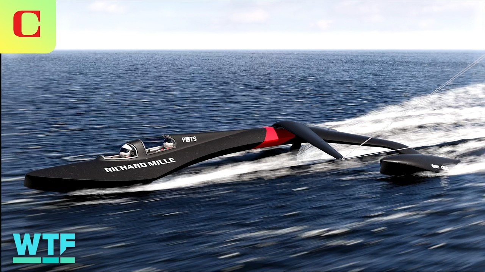

【风筝动力帆船，目标成为全球最快】
Summary: This kite-powered sailboat aims to break the world sailing speed record, featuring a unique design inspired by spaceships and paragliding, with a focus on stability, speed, and wind-powered innovation.
摘要： 这艘风筝动力帆船旨在打破世界帆船速度纪录，其设计灵感来自宇宙飞船和滑翔伞，注重稳定性、速度和风力驱动的创新。

⏱️ Estimated Reading Time: 6 min
📚 六级生词 📚 雅思生词 📚 托福生词 📚 专八生词 📚 SAT生词 📚 考研生词 📚 GRE生词 📚 高考生词
This kite powered sailboat is out to smash the world sailing speed record.
这艘风筝动力帆船旨在打破世界帆船速度纪录。
We talked to SP80, the company behind the boat, to find out what it's like to sail this thing and design a vessel for such high speeds.
我们采访了SP80公司，了解驾驶这艘船的感受以及如何设计如此高速的船只。
The record that the SP80 team is aiming at has three rules set by the World Sailing Speed Record Council.
SP80团队瞄准的纪录由世界帆船速度纪录委员会制定了三条规则。
The record holder must reach the highest average speed over 500 m, have at least one person on board, and use only the wind as their source of energy.
纪录保持者必须在500米内达到最高平均速度，船上至少有一人，且仅使用风作为能源。
With those rules in mind, the SP80 team came up with this design that some might say looks more like a spaceship than a sailboat.
基于这些规则，SP80团队设计出这艘船，有人称它更像宇宙飞船而非帆船。
There are always two pilots on the boat managing the kite.
船上始终有两名飞行员操控风筝。
I'm steering the boat and uh we need to have a really good coordination.
我负责掌舵，我们需要非常默契的配合。
You're sitting in these cockpits protected from the wind, from the water.
你坐在驾驶舱内，免受风浪侵袭。
We don't hear that much the environment.
我们听不到太多环境噪音。
It's changing a lot from conventional sailing when you are feeling the gust and the wind.
这与传统帆船体验截然不同，你能感受到阵风和风力。
The team opted to make their boat a trimaran, meaning it has three hulls.
团队选择将船设计为三体船，即有三个船体。
Two hulls on the side add stability, while the gaps between them reduce the amount of hull contact with the surface of the water.
两侧船体增加稳定性，间隙减少船体与水面接触面积。
Less hull touching the water means less area for the water to exert drag on the boat, which would slow it down.
船体接触水面越少，水的阻力越小，船速就越快。
Hydrofoil sailboats have taken this lack of drag to the extreme, but they aren't always as stable.
水翼帆船将减阻做到极致，但稳定性较差。
There is still a foil element to the SP80 boat, though.
但SP80船只仍保留了水翼设计。
A superventilating foil helps keep the boat in the water and prevent it from being carried away by its giant kite-like sail, which I'll get to in a second.
超通气水翼帮助船只保持在水面，防止被巨型风筝帆带走。
Superventilating isn't like hyperventilating.
超通气并非过度通气。
It just means that the bubbles of evaporated water that form on a normal hydrofoil and make it unstable and hard to accelerate beyond 100 km an hour are prevented because of the special shape of this hydrofoil.
它指特殊水翼形状能避免普通水翼上形成蒸发气泡导致的不稳定和加速困难。
Something really similar to the sound barrier for airplanes.
这与飞机的音障现象非常相似。
And the foil is the main drag element on the boat.
水翼是船上的主要阻力元件。
Some still have limits a little bit higher than 55 knots.
部分水翼的极限速度略高于55节。
And so we try to push it even further as long as we keep the boat stable and have enough power to push it further.
因此只要保持稳定并有足够动力，我们会尝试突破极限。
Now let's talk about that sail or should I say kite.
现在来谈谈帆——或者说风筝。
When it's that far from the boat, it becomes a little unclear.
当它远离船只时，界限变得模糊。
It's still built like a conventional kite.
它仍采用传统风筝结构。
It's also inspired a lot from paragliding.
设计也深受滑翔伞启发。
The fabrics are coming from paragliders and also sails.
面料来自滑翔伞和帆船材料。
It's a mix of all these worlds.
它是多种技术的融合。
SP80 says the kite was chosen for its speed, safety, and control.
SP80表示选择风筝是因它的速度、安全性和可控性。
And changing the kite's size can help the team adjust to various wind conditions.
调整风筝尺寸可帮助团队适应不同风力条件。
Speaking of conditions, speed sailing is really a particular thing in sailing.
说到条件，速度帆船是帆船运动中非常特殊的一项。
We are doing a straight line and going as fast as possible.
我们沿直线尽可能加速。
It's a bit like a drag race.
有点像直线竞速赛。
We need wind coming from the shore so we can sail really close to the shore and have really flat water.
我们需要来自岸边的风，以便贴近海岸航行并获得平静水面。
We are sailing in the south of France.
我们在法国南部航行。
I think one of the best places in Europe for speed sailing.
我认为这是欧洲最适合速度帆船的地方之一。
The current world sailing speed record holder is Paul Larsen who piloted the Vestas Sailrocket 2 to a top speed of 65.45 knots which is more than 75 mph for all you land lovers out there.
现任世界纪录保持者是保罗·拉森，他驾驶Vestas Sailrocket 2创下65.45节（超75英里/小时）的极速。
Unbelievable.
难以置信。
Yeah, the last speed record was in Namibia in Africa.
上次纪录诞生于非洲纳米比亚。
I think one of the best places on earth, but we think it's possible to break the record in France.
我认为那是全球最佳地点之一，但我们认为可能在法国破纪录。
SP80 says it's aiming to break the world record and its own goal of 80 knots by the end of this year.
SP80表示目标是在年底前打破世界纪录并实现80节的目标。
There is nothing to earn at the end except that you're proud to have achieved it.
最终除了成就感别无他物。
After that, the team will be working on finding new applications for the technologies they developed in industries like hydroelectric power, maritime shipping, and of course, boat racing.
之后团队将探索这些技术在水利发电、海运及赛艇等领域的应用。
You are looking at your screen at the data and everything and sometimes you look outside and you see the water like passing super fast and you're okay yeah we'll focus on the data.
你盯着屏幕数据，偶尔看向窗外看到水面飞速掠过，然后继续专注数据。
To see more fast-flying sailboats check out our coverage of last year's SailGP races in San Francisco and subscribe to CNET so you don't miss the latest and greatest tech news as always thanks so much for watching I'm your host Jesse Orral see you next time with the fam.
想了解更多高速帆船，请观看我们对去年旧金山SailGP赛事的报道，并订阅CNET获取最新科技资讯。感谢观看，我是主持人Jesse Orral，下次见。